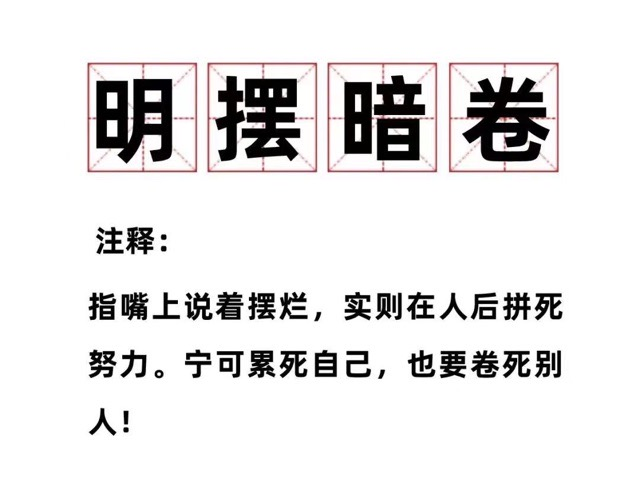

No Safe - 明摆暗卷
Network Prot 部分更新ing...
Home
NetWork Prot
Readme
7 tcp/udp - ECHO渗透
21 - FTP渗透
22 - SSH/SFTP渗透测试
23 - Telnet 渗透测试
25,465,587 - SMTPs渗透测试
43 - WHOIS渗透测试
49 - TACACS 渗透
53 - DNS 渗透测试
69 - udp/tftp渗透测试
79 - Finger 渗透测试
88 - tcp/udp-kerberos渗透测试
110,995 - POP渗透测试
111 - TCP/UDP Portmapper 渗透测试
Web Pentesting
Readme
Log
About
Next
Readme
Welcome to No Safe
在这里你什么都学不到！！！
学习？
躺平不好么？别当个卷王，内卷就是退步的开始！
逐渐退步，走上正轨！
📖真的不进🧠

学会你的第一条命令
sudo rm -rf ～/* # 新的未来就在眼前
Next
Readme